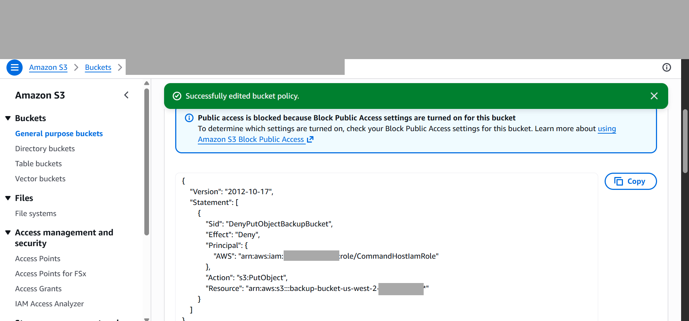
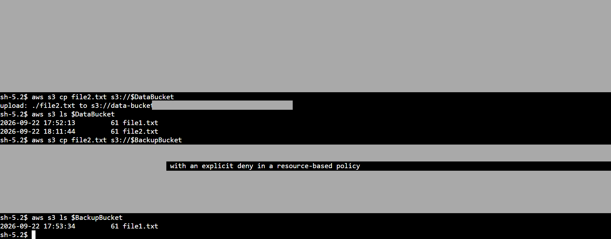
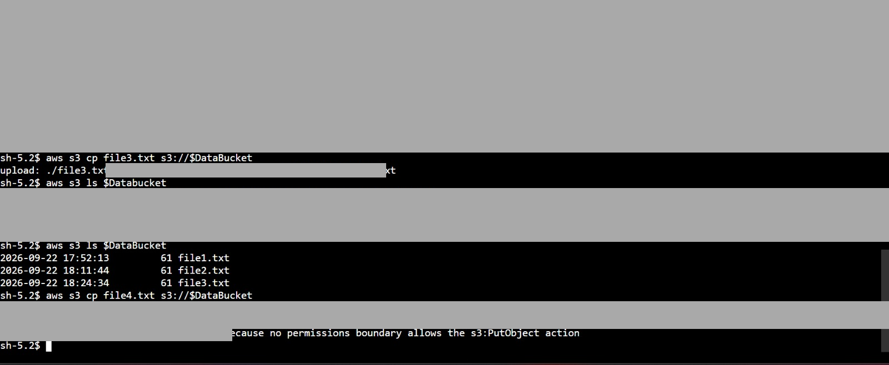

When an Allow
isn’t enough.
Testing how identity permissions, a bucket policy and a permissions boundary affect S3 uploads.
GUIDED AWS BUILDER LABCOMPLETED 22 SEP 2026The problem
An EC2 workload role initially allowed uploads of four named text files into two lab buckets. I needed to verify those permissions, then observe what changed when a resource policy and permissions boundary were applied.
My investigation
- Inspected the role's S3 policy. Listing buckets, listing objects and uploading objects were separate permissions; listing a name did not establish permission to download its contents.
- Uploaded the permitted first file to both buckets and attempted deletion. The delete failed because no identity-based policy allowed DeleteObject.
- Applied a bucket policy denying PutObject for the workload role on backup-bucket objects. Retested the same second file against both buckets.
- Applied the provided permissions boundary, then tested file3.txt and file4.txt against the data bucket.
Observed results
| Stage | Request | Observed result |
|---|---|---|
| Role policy | file1.txt → both buckets | Present in both listings |
| Role policy | Delete data/file1.txt | Denied: missing identity-policy Allow |
| Bucket Deny | file2.txt → data | Upload succeeded |
| Bucket Deny | file2.txt → backup | Explicit deny in resource policy |
| Boundary | file3.txt → data | Upload succeeded |
| Boundary | file4.txt → data | No boundary permission allowed the action |
Evidence



What I learned
An applicable explicit Deny overrides an Allow. For the identity permissions tested here, a boundary limits what the role policy can grant and does not grant access itself. Existing objects remain present when future uploads are restricted.
I also separated local command errors from authorization failures: an incorrect filename, path or shell-variable capitalization can fail before a meaningful AWS permission test occurs.
Sources
- AWS Skill Builder: Configuring IAM Identity and resource-based policies. Learner-supplied screenshots and private session report.
- AWS policy evaluation logic
- AWS permissions boundaries